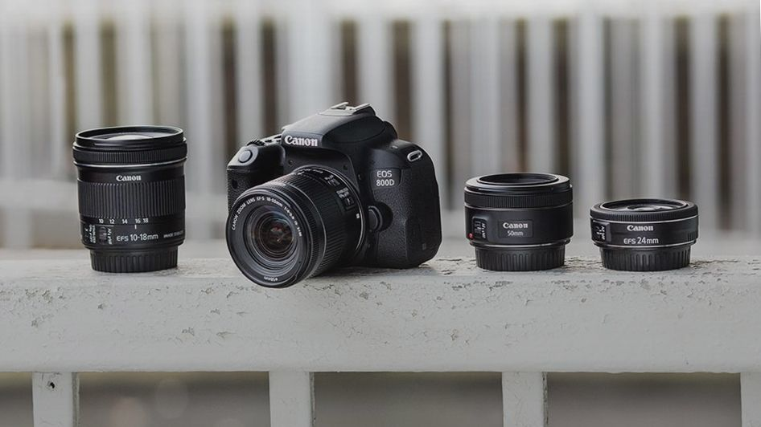
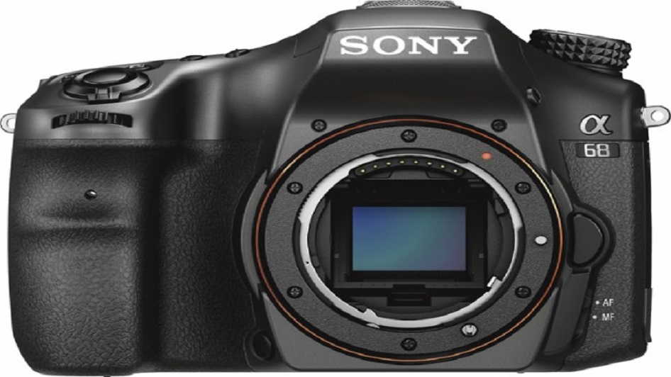

CAMERA
The 5 best 4K cameras in 2017

2016 welcomed a barrage of new cameras equipped with 4K video recording, and now almost every major camera manufacturer has implemented 4K shooting somewhere in their lines. Read More...
Canon EOS Rebel T7i vs T6i
Canon’s new EOS Rebel T7i (known as the EOS 800D outside the US) seeks to up the bar for the upper-entry-level DSLR category, and updates the popular EOS Rebel T6i (EOS 750D) that’s just reached its second birthday. Read More...
New 18-55mm kit lens

Both the EOS Rebel T7i / EOS 800D and EOS 77D are released alongside a new EF-S 18-55mm f/4-5.6 IS STM kit lens, which Canon claims is the smallest non-retractable DSLR kit lens of its focal range. Read More...
Canon - EOS Rebel SL1 DSLR Camera

Capture special moments and more with this camera, which features 18-55mm STM and 75-300mm III lenses to snap stunning photographs with up to 18.0 megapixels. ISO 12,800 sensitivity makes it easy to shoot in low light. Read More...
Canon - EOS 5D Mark IV DSLR Camera

It has a 30.4-megapixel full-frame CMOS sensor and a 100-32,000 ISO range that lets you take large photos that are sharp and bright. The Canon EOS 5D Mark IV body is ideal for shooting action photos with speeds of up to 7 frames/s. Read More...
Sony - Alpha a68 DSLR Camera - black
The Sony a68 A-mount camera with APS-C CMOS sensor has an interchangeable lens system and a 24.2-megapixel sensor. The camera features a top display panel and a control wheel for efficiency, with a tiltable LCD screen for easy access. Read More...